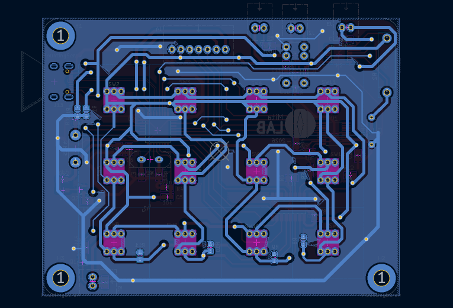
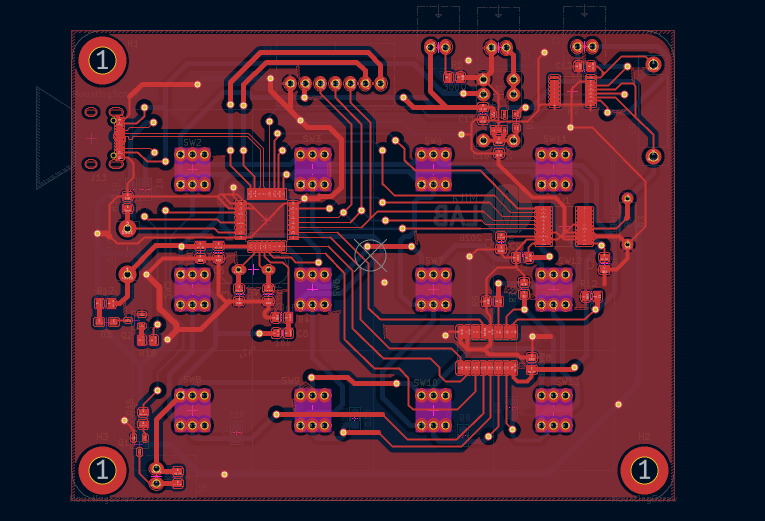

Expériences Professionnelles
> Stage à MitaLab
Laboratoire de Micro-électronique / Micro-mécanique
Université de Tokyo


Le laboratoire m'a exposé son besoin d'un retour quantitatif lors des procédés de rinçage de puces, en salle blanche.
La mission de concevoir et fabriquer un prototype de conductimètre m'a été confiée.
Après avoir établi le cahier des charges pour comprendre les impératifs de cet outil, j'ai établi un schéma électronique de l'appareil.
Composé de multiples parties : alimentation, traitement des données, mesures, interfaces utilisateurs ; L'Ohm-mètre m'a permis d'approfondir et de mettre en œuvre, pour la première fois, l'intégralité de mes connaissances en matière de conception de PCB.
Malgré la confiance que l'équipe m'a accordée, je réalise que ma première difficulté à dépasser était celle de l'approbation et de la certification de chacune des étapes.
Egalement, n'ayant pas eu accès aux produits chimiques nécessaires à l'acquisition de données de référence, j'ai du limiter mon expérimentation préliminaire.